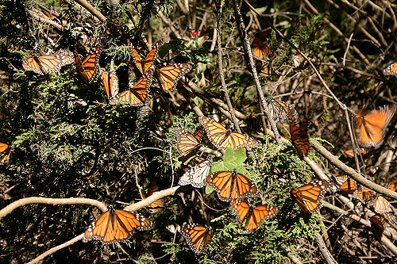
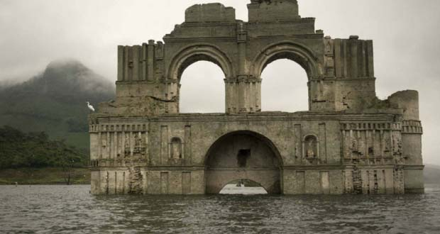
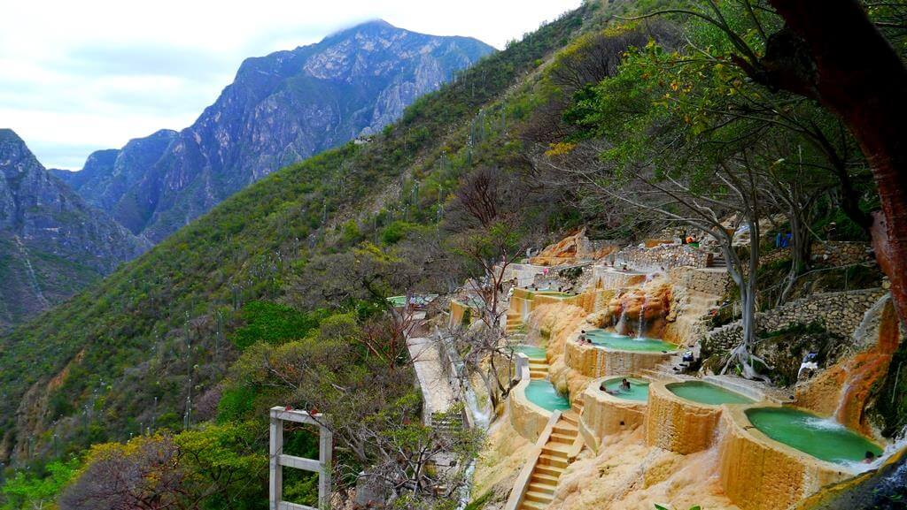

PÁGINA PRINCIPAL

Paisajes Naturales/ Santuario de la Mariposa MonarcaEn el Estado de Michoacán, Estado de México, la Reserva de Biósfera de la Mariposa Monarca protege el ecosistema y entorno de doce colonias de mariposas que brindan en distintas etapas del año un espectáculo natural inigualable, Los Santuarios de la Monarca, son considerados entre las cuatro bellezas naturales reconocidas por la UNESCO como Patrimonio de la Humanidad en suelo nacional. Fecha: 2017/11/06 |
Paisajes creados por el hombreSon aquellos lugares que los humanos han ido creando con los recursos que la naturaleza les brinda.La construcción de la muralla china tomó más de 2.000 años. Comenzó a construirse en el siglo 8 a. E. C., y se terminó oficialmente en 1644. Fecha: 2017/11/07 |
||||

Construcciones destruidas por recursos naturalesEn el municipio de Jalapa del Marqués, un templo dominico construido de piedra y ladrillo, cuya construcción se remonta a mediados del siglo XVI se encuentra sumergido en las aguas de una presa, actualmente se puede observar la parte superior de la vieja construcción, que comprende dos cúpulas unidas por una bóveda de cañón Fecha: 2017/11/08 |

Grutas de TolantongoEscondidas entre la sierra, las Grutas de Tolantongo, alojan un oasis en donde un río y una serie de pozas te harán sentir “como en el mismísimo edén”. Este regalo de la Naturaleza se volvio en un negocio de los Hombres. Fecha: 2017/11/10 |